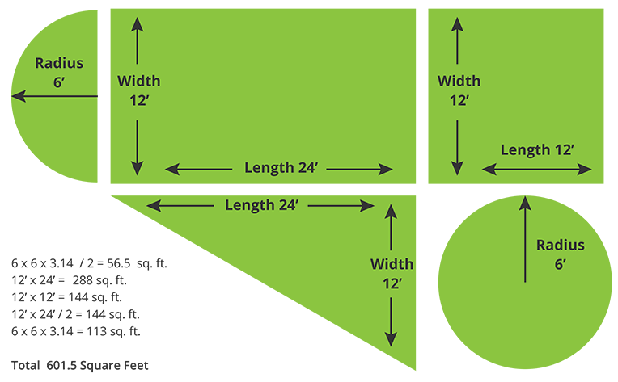
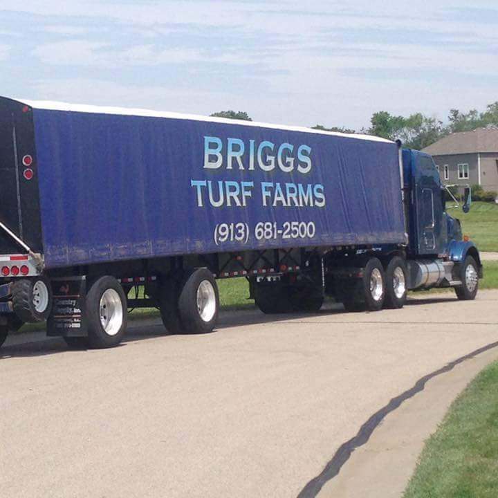

We suggest adding 5–10% to your measurements to allow for cutting and waste. Have an irregularly shaped yard? See the measuring guide below to break it into simple shapes first.
Grab a piece of paper and sketch the area to be sodded, then break it into the shapes below. Measure each section, calculate the square footage, and add them together.

Example: 12 × 24 = 288 sq. ft.
Example: (12 × 24) ÷ 2 = 144 sq. ft. A right triangle has one 90° corner.
Example: (6 × 6) × 3.14 = 113 sq. ft. Divide by 2 for a half circle, by 4 for a quarter.

Call us with your measurements and we'll help you get exactly what you need.
Call 913-681-2500